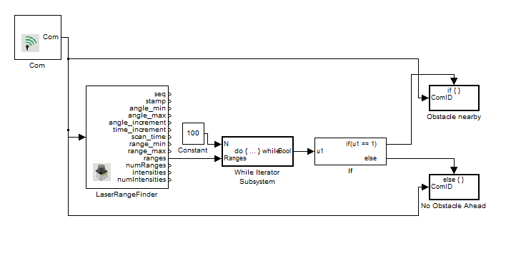
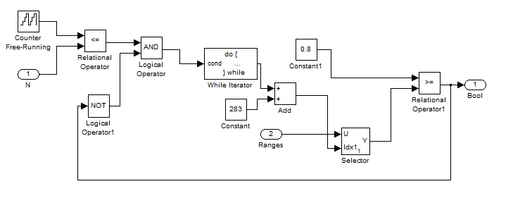
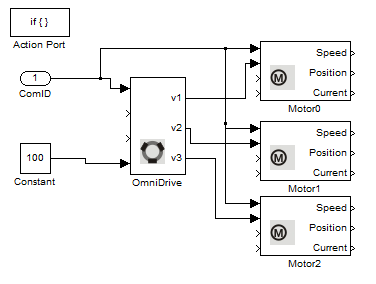
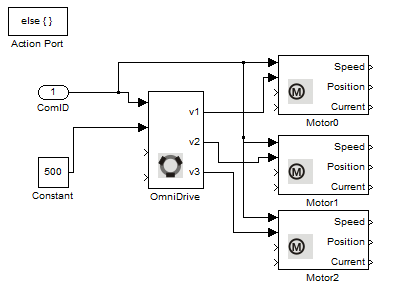

LaserRangeFinder Example
This example illustrates the use of the Laser Range Finder on Robotino. If Robotino is placed in an obstacle cluttered environment then it moves around avoiding the obstacles.
Contents

Blocks used in this example
Description

Robotino can be equipped with a very precise Hokuyo URG-04LX-UG01 laser scanner. In this example we read the distance readings from the laser range finder. We iterate through the ranges obtained from Robotino in a for iterator system (shown below). The ranges values between 283 - 383 are considered as they lie in front of Robotino. We compare the readings with a value of 0.8 (80 cm) and if it is less than 0.8 then we know we are approaching an obstacle.

In case it is, then we stop Robotino and let it rotate until it is clear of obstacles.

If no obstacle is detected then we let Robotino move forward with a constant velocity.
